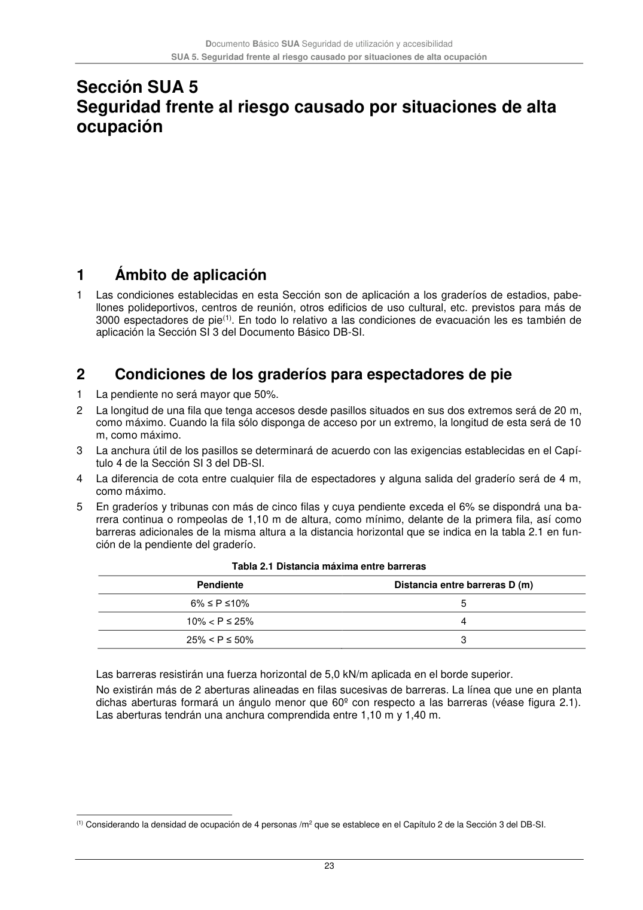

DB-SUA Seguridad de utilización y accesibilidad · edición 2022-06-14 · capa oficial
Documento DB-SUA-oficial · SHA-256 del PDF 3cfb5bbb135e8f02faebd8b844e03e8947994c18d4c9e675a7d2aa37d1cd5958
Copia fiel del PDF fuente · Fuente oficial
Ficha de la disposición en la fuente oficial
Formatos: JSON del segmento · Markdown
Iluminación de las señales de seguridad 1 La iluminación de las señales de evacuación indicativas de las salidas y de las señales indicativas de los medios manuales de protección contra incendios y de los de primeros auxilios, deben cumplir los siguientes requisitos: a) La luminancia de cualquier área de color de seguridad de la señal debe ser al menos de 2 cd/m2 en todas las direcciones de visión importantes; b) La relación de la luminancia máxima a la mínima dentro del color blanco o de seguridad no debe ser mayor de 10:1, debiéndose evitar variaciones importantes entre puntos adyacentes; c) La relación entre la luminancia Lblanca, y la luminancia Lcolor >10, no será menor que 5:1 ni mayor que 15:1. d) Las señales de seguridad deben estar iluminadas al menos al 50% de la iluminancia requerida, al cabo de 5 s, y al 100% al cabo de 60 s. Documento Básico SUA Seguridad de utilización y accesibilidad SUA 5. Seguridad frente al riesgo causado por situaciones de alta ocupación 23
